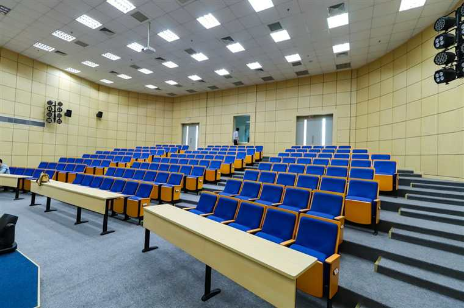

STEM
Physik, Mathematik, Statistik und technische Grundlagen.

Koyuncu Academy
Diese Seite wurde in die neue Premium-Struktur übernommen. Die deutsche Version fokussiert Nachhilfe, Prüfungsvorbereitung, technische Workflows und freigegebene Lernmaterialien.
Physik, Mathematik, Statistik und technische Grundlagen.
Python, Jupyter, LaTeX, Elektrotechnik, Berichte und Workflows.
Abitur, internationale Prüfungen und Studienvorbereitung.